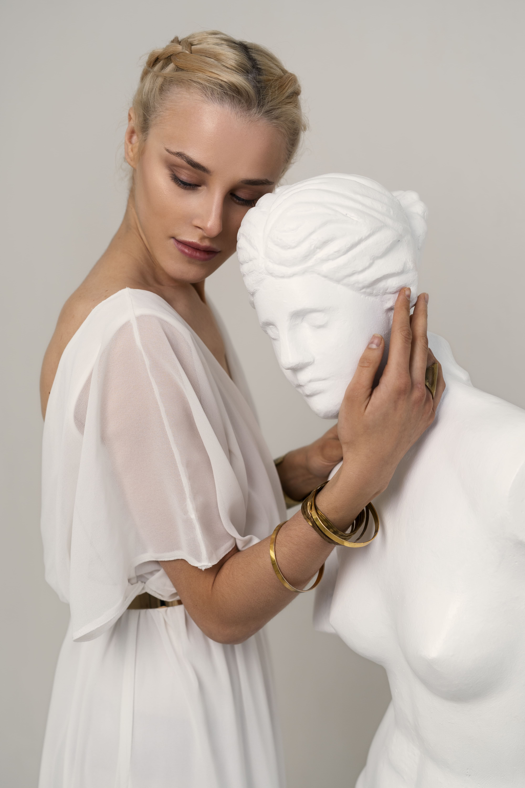
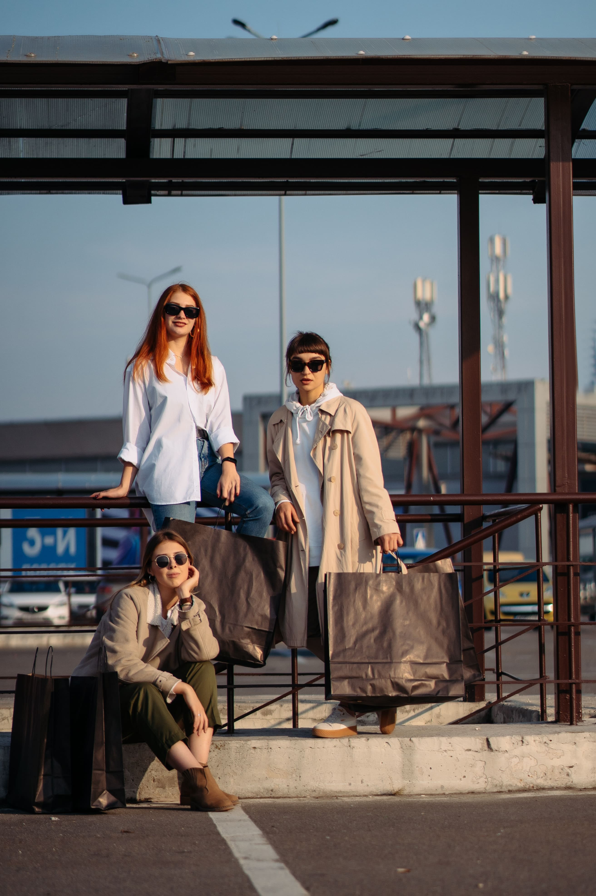

Povijest
Naš dućan započeo je skromno, kao mala obiteljska ideja u srcu grada. U početku smo nudili samo nekoliko proizvoda – ručno izrađene predmete i sitnice koje smo sami voljeli. Bilo je to vrijeme kad su se sve narudžbe zapisivale na papir, a komunikacija s kupcima odvijala uz kavu i stisak ruke. Kroz entuzijazam i predanost, izgradili smo bazu vjernih kupaca koji su prepoznali našu autentičnost.
U drugom desetljeću poslovanja, naš se dućan počeo širiti. Dodali smo nove proizvode, počeli surađivati s lokalnim obrtnicima i malim proizvođačima. Polako, ali sigurno, stvarali smo ime koje se povezivalo s kvalitetom, pouzdanošću i toplim pristupom. Dućan je postao više od prodajnog mjesta – postao je mjesto susreta, ideja i zajedništva.
Ulaskom u digitalno doba, odlučili smo napraviti korak naprijed. Otvorili smo vlastitu web trgovinu, proširili prisutnost na društvenim mrežama i prilagodili se novim navikama kupaca. Iako je tehnologija donijela promjene, naš pristup je ostao isti – svaki proizvod s pažnjom, svaka narudžba s osmijehom. To su godine koje su nas naučile kako rasti, a ostati vjerni sebi.
Danas naš dućan stoji kao svjedok upornosti, promjena i ljubavi prema onome što radimo. I dalje radimo s malim proizvođačima, i dalje biramo proizvode koji imaju priču. Naš tim je veći, ali duh ostaje isti – obiteljski, srdačan i posvećen. Gledamo u budućnost s nadom i idejama, želeći ostati ono što smo uvijek bili: mali dućan s velikim srcem.